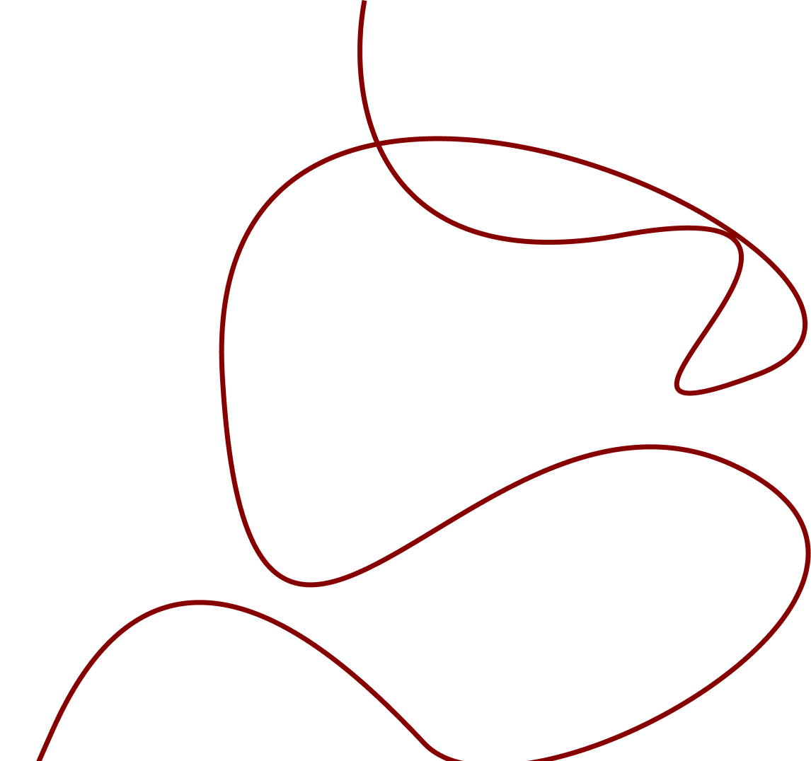

Your creditors Your secret love Your sworn enemy Your favourite coffee shop Your mother Your dentist Your local office of unemployment Your oldest friendFor those living here, the arcades are a kind of personal agenda, made of stone, brick and cobbles. You can visit:
You can keep all these rendezvous without ever being exposed to the sky. And what difference does this make to the facts of your life? None. Yet under the arcades the echoes of those facts sound different. And in the evening pleasure and desolation take their evening stroll along the arcades and walk hand in hand.